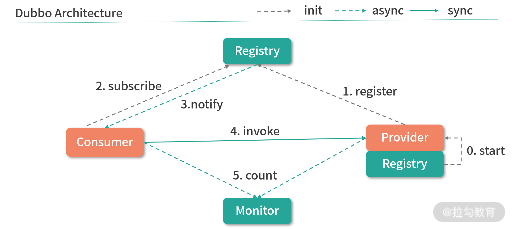
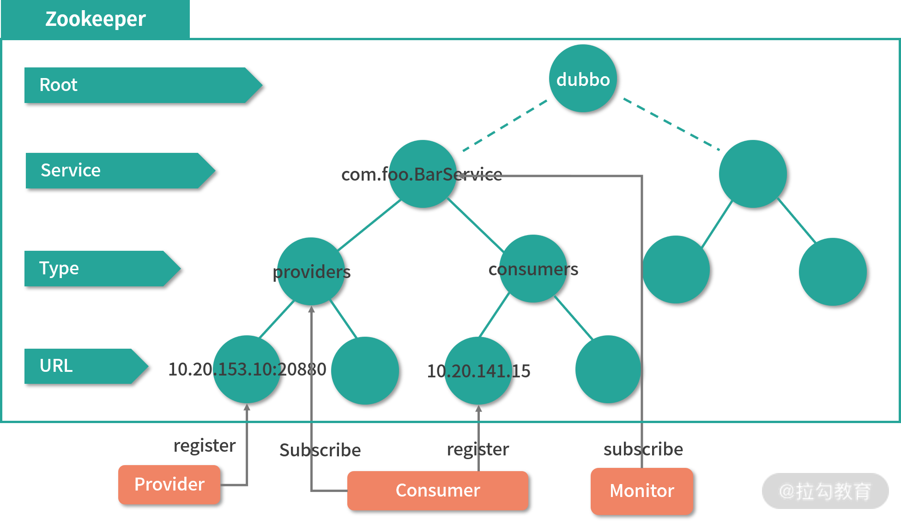
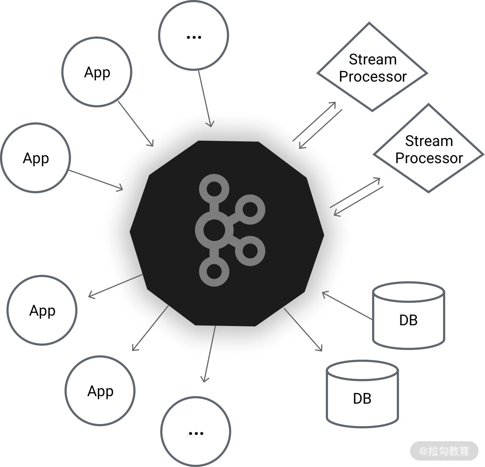
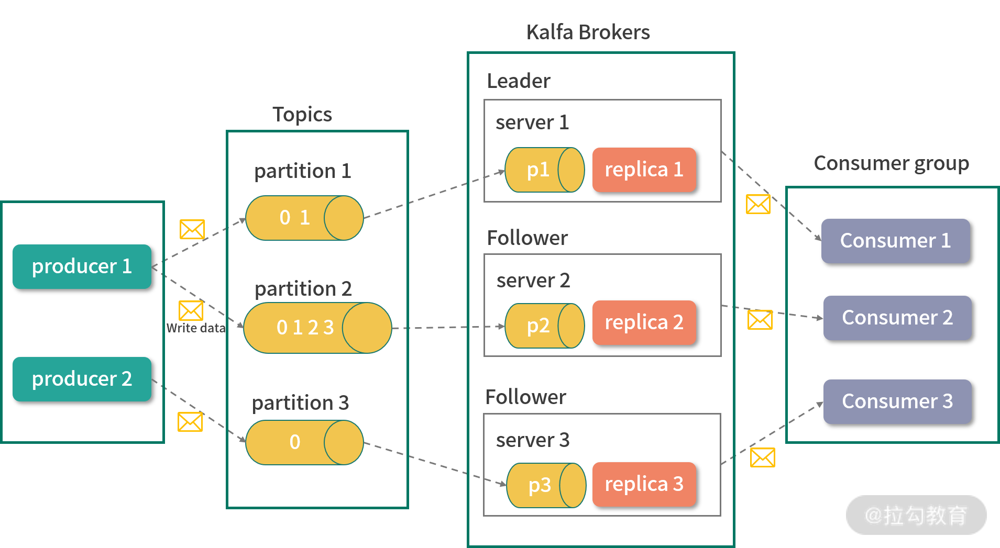
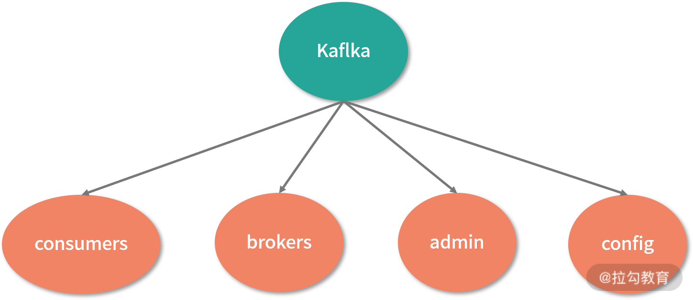

- 00 开篇词：选择 ZooKeeper，一步到位掌握分布式开发.md.html
- 01 ZooKeeper 数据模型：节点的特性与应用.md.html
- 02 发布订阅模式：如何使用 Watch 机制实现分布式通知.md.html
- 03 ACL 权限控制：如何避免未经授权的访问？.md.html
- 04 ZooKeeper 如何进行序列化？.md.html
- 05 深入分析 Jute 的底层实现原理.md.html
- 06 ZooKeeper 的网络通信协议详解.md.html
- 07 单机模式：服务器如何从初始化到对外提供服务？.md.html
- 08 集群模式：服务器如何从初始化到对外提供服务？.md.html
- 09 创建会话：避开日常开发的那些“坑”.md.html
- 10 ClientCnxn：客户端核心工作类工作原理解析.md.html
- 11 分桶策略：如何实现高效的会话管理？.md.html
- 12 服务端是如何处理一次会话请求的？.md.html
- 13 Curator：如何降低 ZooKeeper 使用的复杂性？.md.html
- 14 Leader 选举：如何保证分布式数据的一致性？.md.html
- 15 ZooKeeper 究竟是怎么选中 Leader 的？.md.html
- 16 ZooKeeper 集群中 Leader 与 Follower 的数据同步策略.md.html
- 17 集群中 Leader 的作用：事务的请求处理与调度分析.md.html
- 18 集群中 Follow 的作用：非事务请求的处理与 Leader 的选举分析.md.html
- 19 Observer 的作用与 Follow 有哪些不同？.md.html
- 20 一个运行中的 ZooKeeper 服务会产生哪些数据和文件？.md.html
- 21 ZooKeeper 分布式锁：实现和原理解析.md.html
- 22 基于 ZooKeeper 命名服务的应用：分布式 ID 生成器.md.html
- 23 使用 ZooKeeper 实现负载均衡服务器功能.md.html
- 24 ZooKeeper 在 Kafka 和 Dubbo 中的工业级实现案例分析.md.html
- 25 如何搭建一个高可用的 ZooKeeper 生产环境？.md.html
- 26 JConsole 与四字母命令：如何监控服务器上 ZooKeeper 的运行状态？.md.html
- 27 crontab 与 PurgeTxnLog：线上系统日志清理的最佳时间和方式.md.html
- 28 彻底掌握二阶段提交三阶段提交算法原理.md.html
- 29 ZAB 协议算法：崩溃恢复和消息广播.md.html
- 30 ZAB 与 Paxos 算法的联系与区别.md.html
- 31 ZooKeeper 中二阶段提交算法的实现分析.md.html
- 32 ZooKeeper 数据存储底层实现解析.md.html
- 33 结束语 分布技术发展与 ZooKeeper 应用前景.md.html
- 捐赠
24 ZooKeeper 在 Kafka 和 Dubbo 中的工业级实现案例分析
在前面的课程中，我们学习了如何使用 ZooKeeper 实现分布式 ID 生成器，以及负载均衡的分布式环境下常用的解决方案。为了更进一步地提高用 ZooKeeper 解决问题的能力，我们再来分析一下在主流开源框架中如何使用 ZooKeeper。本节课主要选择业界最为流行的两个框架，一个是 RPC 框架 Dubbo，另一个是分布式发布订阅消息系统 Kafka。下面我们先来分析这两个框架都分别利用 ZooKeeper 解决了哪些问题。
Dubbo 与 ZooKeeper
Dubbo 实现过程
Dubbo 是阿里巴巴开发的一套开源的技术框架，是一款高性能、轻量级的开源 Java RPC 框架。它提供了三大核心能力：
- 面向接口的远程方法调用
- 智能容错和负载均衡
- 服务自动注册和发现
其中，远程方法调用是 Dubbo 最为核心的功能点。因为一个分布式系统是由分布在不同网络区间或节点上的计算机或服务，通过彼此之间的信息传递进行协调工作的系统。因此跨机器或网络区间的通信是实现分布式系统的核心。而 Dubbo 框架可以让我们像调用本地方法一样，调用不同机器或网络服务上的线程方法。
下图展示了整个 Dubbo 服务的连通过程。整个服务的调用过程主要分为服务的消费端和服务的提供方。首先，服务的提供方向 Registry 注册中心注册所能提供的服务信息，接着服务的消费端会向 Registry 注册中心订阅该服务，注册中心再将服务提供者地址列表返回给消费者。如果有变更，注册中心将基于长连接将变更数据推送给消费者，从而通过服务的注册机制实现远程过程调用。

ZooKeeper 注册中心
通过上面的介绍，我们不难发现在整个 Dubbo 框架的实现过程中，注册中心是其中最为关键的一点，它保证了整个 PRC 过程中服务对外的透明性。而 Dubbo 的注册中心也是通过 ZooKeeper 来实现的。
如下图所示，在整个 Dubbo 服务的启动过程中，服务提供者会在启动时向 /dubbo/com.foo.BarService/providers 目录写入自己的 URL 地址，这个操作可以看作是一个 ZooKeeper 客户端在 ZooKeeper 服务器的数据模型上创建一个数据节点。服务消费者在启动时订阅 /dubbo/com.foo.BarService/providers 目录下的提供者 URL 地址，并向 /dubbo/com.foo.BarService/consumers 目录写入自己的 URL 地址。该操作是通过 ZooKeeper 服务器在 /consumers 节点路径下创建一个子数据节点，然后再在请求会话中发起对 /providers 节点的 watch 监控。

Kafka 与 ZooKeeper
接下来我们再看一下 ZooKeeper 在另一个开源框架 Kafka 中的应用。Kafka 是一种高吞吐量的分布式发布订阅消息系统，它可以处理消费者在网站中的所有动作流数据，经常用来解决大量数据日志的实时收集以及 Web 网站上用户 PV 数统计和访问记录等。我们可以把 Kafka 看作是一个数据的高速公路，利用这条公路，数据可以低延迟、高效地从一个地点到达另一个地点。

Kafka 实现过程
在介绍 ZooKeeper 在 Kafka 中如何使用之前，我们先来简单地了解一下 Kafka 的一些关键概念，以便之后的学习。如下图所示，整个 Kafka 的系统架构主要由 Broker、Topic、Partition、Producer、Consumer、Consumer Group 这几个核心概念组成，下面我们来分别进行介绍。

Broker
Kafka 也是一个分布式的系统架构，因此在整个系统中存在多台机器，它将每台机器定义为一个 Broker。
Topic
Kafka 的主要功能是发送和接收消息，作为一个高效的消息管道，它存在于不同的系统中。Kafka 内部，将接收到的无论何种类型的消息统一定义为 Topic 类，可以将 Topic 看作是消息的容器。
Partition
Partition 是分区的意思，与 Topic 概念相似，它也是存放消息的容器。不过 Partition 主要是物理上的分区，而 Topic 表示消息的逻辑分区。
Producer
Producer 是消息的生产者，整个 Kafka 系统遵循的是生产者和消费者模式，消息会从生产者流通到接收者。
Consumer 和 Consumer Group
Consumer 即消费者，是 Kafka 框架内部对信息对接收方的定义。Consumer Group 会将消费者分组，然后按照不同的种类进行管理。
在整个 Kafka 服务的运行过程中，信息首先通过 producer 生产者提交给 Kafka 服务器上的 Topics 消息容器。在消息容器的内部，又会根据当前系统磁盘情况选择对应的物理分区进行存储，而每台服务分区可能对应一台或多台 Broker 服务器，之后 Broker 服务器再将信息推送给 Consumer。
Zookeeper 的作用
介绍完 Kafka 的相关概念和服务运行原理后，接下来我们学习 ZooKeeper 在 Kafka 框架下的应用。在 Kafka 中 ZooKeeper 几乎存在于每个方面，如下图所示，Kafka 会将我们上面介绍的流程架构存储为一个 ZooKeeper 上的数据模型。

由于 Broker 服务器采用分布式集群的方式工作，那么在服务的运行过程中，难免出现某台机器因异常而关闭的状况。为了保证整个 Kafka 集群的可用性，需要在系统中监控整个机器的运行情况。而 Kafka 可以通过 ZooKeeper 中的数据节点，将网络中机器的运行统计存储在数据模型中的 brokers 节点下。
在 Kafka 的 Topic 信息注册中也需要使用到 ZooKeeper ，在 Kafka 中同一个Topic 消息容器可以分成多个不同片，而这些分区既可以存在于一台 Broker 服务器中，也可以存在于不同的 Broker 服务器中。
而在 Kafka 集群中，每台 Broker 服务器又相对独立。为了能够读取这些以分布式方式存储的分区信息，Kafka 会将这些分区信息在 Broker 服务器中的对应关系存储在 ZooKeeper 数据模型的 topic 节点上，每一个 topic 在 ZooKeeper 数据节点上都会以 /brokers/topics/[topic] 的形式存在。当 Broker 服务器启动的时候，会首先在 /brokers/topics 节点下创建自己的 Broker_id 节点，并将该服务器上的分区数量存储在该数据节点的信息中。之后 ，在系统运行的过程中，通过统计 /brokers/topics 下的节点信息，就能知道对应的 Broker 分区情况。
整合 ZooKeeper 到自己的系统
在 Java 中使用 ZooKeeper
通过上面的介绍，我们大致了解了比较流行的开源框架是如何利用 ZooKeeper 解决自身问题的。接下来我们学习如何在自己的项目中使用 ZooKeeper。这里我们以比较流行的 springboot 框架为例。如下面代码所示，要想在 SpringBoot 框架中使用 ZooKeeper，首先要在工程的 pom 文件中引入对应的包。
我们在 dependency 引用配置中添加了版本为 3.6.1 的 org.apache.zookeeper 开发包。通过这个配置，我们的工程就可以使用 ZooKeeper 的相关功能了。
<dependency>
<groupId>org.apache.zookeeper</groupId>
<artifactId>zookeeper</artifactId>
<version>3.6.1</version>
</dependency>
在项目开发 ZooKeeper 服务的时候，往往都会编写大量 ZooKeeper 客户端代码，去请求 ZooKeeper 服务端来完成相关的业务处理。而 ZooKeeper 自带的客户端使用起来不是很便利。之前我们学习过 Curator 框架，该框架被誉为 ZooKeeper 客户端中的瑞士军刀。利用该框架可以大大提高我们开发 ZooKeeper 服务的效率，因此，在项目开发中也推荐你来使用。
与上面介绍的相同，要想在项目中使用 Curator，首先需要将 Curator 引入到项目中，如下图所示，我们通过在 pom 文件中添加 dependency 来完成。首先，在配置中添加 4.0.0 版本的 org.apache.curator 包，其中包含了 Curator 的基础功能。之后添加的 curator-recipes 包，其中包括了重入锁、读写锁、Leader 选举设置等高级操作功能。把这三个包引用到工程后，整个 springboot 工程就可以利用 ZooKeeper 进行开发了。
<dependency>
<groupId>org.apache.curator</groupId>
<artifactId>curator-framework</artifactId>
<version>4.0.0</version>
</dependency>
<dependency>
<dependency>
<groupId>org.apache.curator</groupId>
<artifactId>curator-recipes</artifactId>
<version>4.0.0</version>
</dependency>
在 Python 中使用 ZooKeeper
Python 作为一门跨平台开发语言，在数据科学、微服务、服务端开发中都有很广泛的应用。可能很多开发者是使用 Python 来进行业务开发的，下面我们介绍一下在 Python 项目中如何使用 ZooKeeper 服务。要想在 Python 中使用 ZooKeeper 服务，我们首先要在 Python 的运行环境中安装 kazoo 包。
pip install kazoo
连接 ZooKeeper 服务器
安装完 kazoo 包后，我们可以着手在 Python 项目中使用 ZooKeeper 服务了。首先连接 ZooKeeper 服务器，如下面的代码所示，在代码中引入 KazooClient 包，它的作用和上面介绍的 Curator 一样，主要提供 ZooKeeper 客户端的操作功能。之后调用 KazooClient 函数并传入服务器地址来创建服务器连接会话，再调用 create 函数来创建数据节点。
from kazoo.client import KazooClient
zk = KazooClient(hosts='127.0.0.1:2181')
zk.start()
zk.create("/pyzk/study/node", b"a value")
在日常开发工作中，无论是在 SpringBoot 框架下使用 Java 语言开发项目，还是使用 Pyhton 语言进行开发，使用 ZooKeeper 服务的方式基本一样，都是先要引入相关的 ZooKeeper 包，之后调用相关的客户端函数来完成业务相关的创建工作。
总结
本课时我们主要介绍了 ZooKeeper 在开源框架中的使用情况，其中，我们重点讲解了 Kafka 框架和 Dubbo 框架。Kafka 作为一个开源的分布式消息服务，会利用 ZooKeeper 实现对集群 Broker 服务器的运行情况统计等。而 Dubbo 则会利用 ZooKeeper 实现一个注册机制，以保证服务的透明性。
在实际的生产中 ZooKeeper 还能解决很多其他的问题，而这些问题本质上都是围绕分布式环境下一致性、可用性和分区容错性这三个分布式环境问题产生的。
这里给你留一个作业：试着使用 ZooKeeper 来解决在你在工作中遇到的问题，并尝试提升系统的安全性和稳定性。
© 2019 - 2023 Liangliang Lee. Powered by gin and hexo-theme-book.